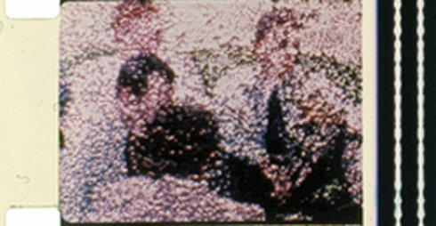
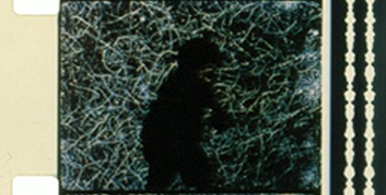

Artist in Focus: Phil Salomon
Sonntag 11 okt | 19.00 | werkstattkino
Remains to be SeenUSA 1989/1994 17 min | 16mm Analoge Nostalgie, die sich in der materiellen Endlichkeit des Filmstreifens manifestiert, in einer Ästhetik der Verflüssigung als eine der vielfältigen Erscheinungsweisen des Verfalls. Neben dem Zerschmelzen der Emulsionsschichten können Risse, Schraffuren oder solarisations-ähnliche Irrealisierungen des Dargestellten entstehen. Damit werden die ästhetisch reflektierten Todesnarrative des Medienwandels zunehmend auf ihre Lebendigkeit hin geöffnet – der materiellen „Autodestruktivität“ korrespondiert die Autogenerativität. (Olga Moskatova) |
 |
Night of the Meek (Twilight Psalm III)USA 2002 24 min | 16mm Berlin, 9. November 1938. Während die Synagogen brennen und die Nacht in Scherben zerbricht, wird der Rabbiner von Prag aus einem dunklen Traum geweckt. Er soll die magischen Briefe aus dem Großen Buch beschwören. Ein Kindertotenlied in Schwarz und Silber in einer Nacht der Götter und Monster. Dem Andenken Anne Franks gewidmet und angesiedelt zwischen den frühen Arbeiten David Lynchs und den Filmen von Stan Brakhage. |
Walking Distance (Twilight Psalm II)AT 1999 10 min | ohne Dialog | 35mm CinemaScope Man stelle sich eine verrostete Filmdose aus dem Mittelalter vor, die Jahrhunderte überdauert hat, eine seit langem verschollene Biograph-Star-, eine Griffith-Méliès-Coproduktion, einen Film mit zwei Rollen, der uns aus dem – sagen wir – Bronzezeitalter erhalten geblieben ist – einer Zeit, als die Bilder eher geschmolzen und gekocht wurden als nur aufgenommen, als sie wie flüssiges Silber waren, nicht fixiert und gewaschen werden konnten, frei waren, sich neu zu formieren und zusammenzurinnen zu instabilen, temporären Gebilden, zu bloßen Rahmen für Gesichter, Orte und Dinge, ihre Form verändernd, je nach Laune und Bedarf, ins Unheimliche oder ins Unvermeidliche. Eine einfache Geschichte mit Horizontalen und Vertikalen, ein Kino des Äthers und des Erzes — für Anselm Kiefer. (Phil Solomon) |